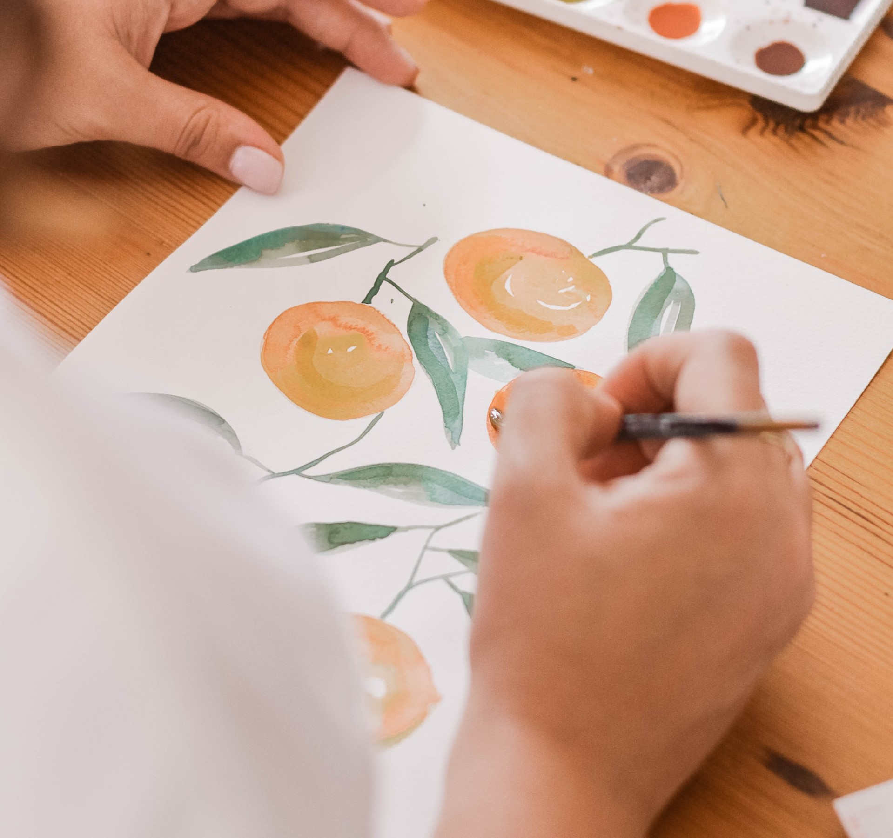

There Are No Bad Painters, Only Lazy Ones
Are you interested in drawing but never have enough brave to start? I hope my experience could help you.

SPEEDRUN DRAWING? HA, EASY!!

Extra Lesson: Grayscale -> Beautiful Color Tutorials! Another Easy Colouring Skill!
If you are interested in coloring, I have one more cool technique to share with you. This YouTuber did a really great job of explaining how to use gradient maps for coloring! The drawing you see above is an art piece I created after I watch the tutorial.